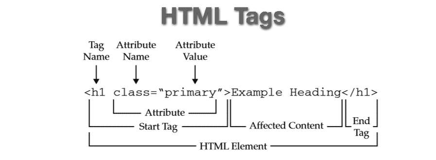

GO BACK TO HOME PAGE
HTML Basics
HTML (HyperText Markup Language) is the code that is used to structure a web page and its content.
The markup language defines the structure of web content content. It consists of a series of elements, which are used to enclose, or wrap, different parts of the content to make it appear a certain way, or act a certain way.
HTML Elements
An HTML element is a part of a webpage. It may contain a data item, text, an image, or perhaps nothing. A typical element includes an tags with some attributes and enclosed text content.
HTML Tags
HTML Tags are the basic building blocks of an HTML document. Tags are used to define the structure and content of a webpage. They are enclosed in angle brackets.
HTML tags can be opening tags and closing tags, and they wrap around the content they are meant to define.
Characteristics of HTML Tags
- Opening Tag: The starting point of an element, like
<p>. It tells the browser where the element begins.
- Closing Tag: The endpoint of an element, like
</p>. It includes a forward slash (/) and tells the browser where the element ends.
- Content: The text or other elements inside the tags. For example, in
<p>Hello, World!</p>, the content is "Hello, World!".
- Element: The complete structure consisting of the opening tag, content, and closing tag. For example,
<p>Hello, World!</p> is a complete paragraph element.
HTML Attributes
HTML Attributes provide additional information about an HTML element. Attributes are used to modify the behavior or appearance of an element and are always included in the opening tag.
They are written as name="value", where name is the attribute name (for example: class, id, href) and value is the attribute value (for example "button", "content", "#link").
Characteristics of HTML Attributes
- A space between it and the element name (or the previous attribute, if the element already has one or more attributes).
- The attribute name followed by an equal sign.
- The attribute value wrapped by opening and closing quotation marks.
Examples of an HTML Element, Tags and Attributes

In the image above, we have a example of a HTML element which has a heading one tag which has an opening tag, attibute name and value, content, and a closing tag.
History of HTML
Here is a brief history of HTML based on Tutorials Point
HyperText Markup Language (HTML) was initially developed by Sir Tim Berners-Lee in late 1991. It was designed as a standard language for creating and formatting documents on the World Wide Web. All the web pages on the internet are made from HTML.
History and Evolution
Here you will see the evolution of HTML over the past couple of decades. The major upgrade was done in HTML5 in 2012.
- 1991: Tim Berners-Lee created HyperText Markup Language but it was not officially released.
- 1993: Tim Berners-Lee created the first version of HTML that was published and available to the public.
- 1995: HTML 2.0 was released with a few additional features along with the existing features.
- 1997: There was an attempt to extend HTML with HTML 3.0, but it was replaced by the more practical HTML 3.2.
- 1998: The W3C (World Wide Web Consortium) decided to shift focus to an XML-based HTML equivalent called XHTML.
- 1999: HTML 4.01, which became an official standard in December 1999, was the most widely used version in the early 2000s.
- 2000: XHTML 1.0, completed in 2000, was a combination of HTML4 in XML.
- 2003: The introduction of XForms reignited interest in evolving HTML itself rather than replacing it with new technologies. This new theory recognized that XML was better suited for new technologies like RSS and Atom, while HTML remained the cornerstone of the web.
- 2004: A W3C workshop took place to explore reopening HTML's evolution. Mozilla and Opera jointly presented the principles that later influenced HTML5.
- 2006: The W3C expressed interest in HTML5 development and formed a working group to collaborate with the WHATWG. The W3C aimed to publish a "finished" HTML5 version, whereas the WHATWG focused on a Living Standard, continuously evolving HTML.
- 2012: HTML5 can be seen as an extended version of HTML 4.01, which was officially published in 2012.
Go to Part 2: Formatting and Grouping